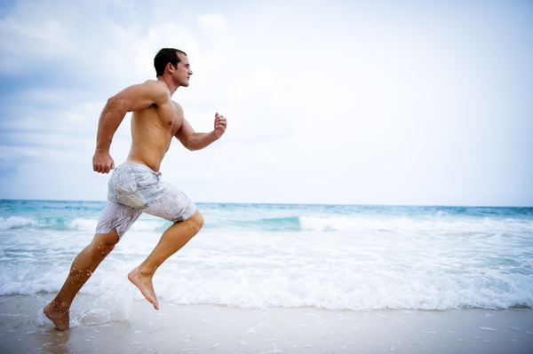
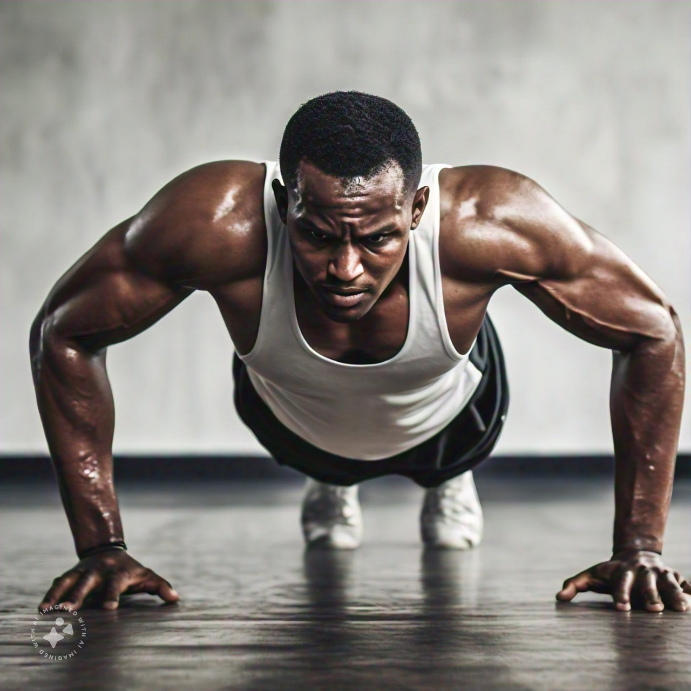
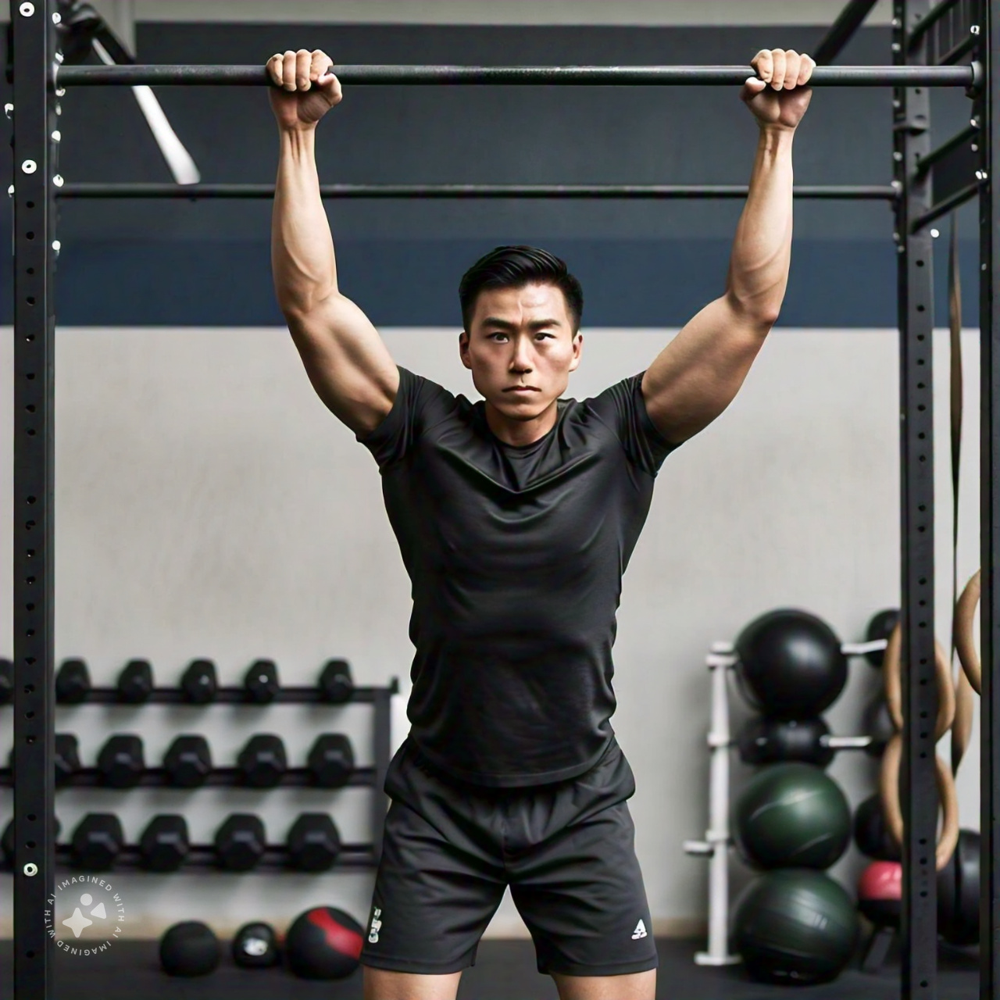

RUNNING:
Running is a simple and effective way to stay fit and feel good!
You just need a good pair of shoes to get started.You can run anywhere—on a
track,in a park, or even on a treadmill.
Key Points About Running:
Easy to Start: You don’t need special equipment or a gym. Just lace up your
shoes and go!Good for Your Body: Running helps strengthen your heart, build
muscles,and burn calories.
Boosts Mood: It releases endorphins, which can make you feel happier.
Flexible: You can run alone or with friends, at your own pace.
Goal Setting: Whether it’s running a certain distance or completing a race,
setting goals can keep you motivated.

Push-Ups:
Push-ups are a great bodyweight exercise that targets multiple
muscle groups,including the arms, chest, and core.They can
be done anywhere and require no equipment.
How to Do a Push-Up
1. Start in a plank position with your hands placed slightly
wider than shoulder-width apart.
2. Lower your body until your chest nearly touches the ground.
3. Push back up to the starting position while keeping your
body straight.
Benefits of Push-Ups
- Builds upper body strength
- Improves core stability
- Can be modified for all fitness levels
- Enhances overall endurance

What are Pull-Ups?
Pull-ups are a compound exercise that primarily targets the
upper body muscles, particularly the back,shoulders, and arms.
Benefits of Pull-Ups:
- Builds upper body strength
- Improves grip strength
- Enhances core stability
- Can be modified for all fitness levels